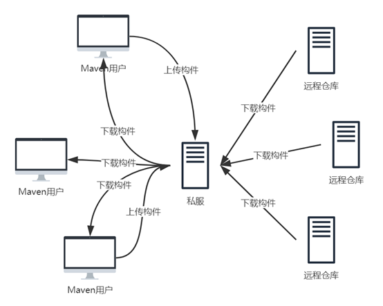

Maven主要服务于基于Java平台的项目构建、依赖管理和项目信息开发，它是一个异常强大的构建工具，能够帮助我们自动化构建过程，从清理、编译、测试到生成报告，再到打包和部署。
使用Maven最大的一点优点就是便捷。构建项目时，开发者无需一遍又一遍地输入命令，一次又一次地点击鼠标，我们需要做的就是输入Maven的简单命令，Maven会帮我们处理那些繁琐的任务。
在使用Maven之前，多个项目可能有多种构建方式；使用Maven之后，多个项目的构建方式被统一起来，这样极大地避免了不必要的学习成本，而且有利于项目团队的标准化。
Maven不仅仅是构建工具，它还是一个依赖管理工具和项目信息管理工具。它提供有公共的中央仓库，只要我们提供项目所需构件的“坐标”，Maven能帮助我们自动下载，省去手工寻找的时间成本。
在Maven的世界中，任何一个依赖、插件或者项目构建的输出，都可以被称为构件，每一个构件都有其唯一的坐标标识（主要包含groupId、artifactId、version）。根据坐标标识，任何Maven项目使用任何一个构件的方式是完全相同的。在此基础上，Maven可以在某个位置统一存储所有Maven项目共享的构件，这个统一的位置就是Maven仓库。
实际的Maven项目将不再各自存储其依赖文件，它们只需要声明这些依赖的坐标，在需要的时候（编译项目时），Maven会自动根据坐标找到仓库中的构件并使用它们。
本地仓库即存储在本机磁盘中的某个文件夹，Maven下载的构件都存储在该文件夹下。在安装Maven软件后，默认情况下在用户目录下都有一个路径为“.m2/repository/”的仓库目录，目录路径类似如下形式：“C:\Users\xxx\.m2\repository\”，另外开发者可编辑Maven安装目录下“conf”文件夹中的“settings.xml”文件，在其中设置本地仓库的路径。具体的设置并不是本文重点，在此不加以描述，读者可请自行百度。
顾名思义，远程仓库即是存储在远端服务器中的某个文件夹，该文件夹存储构件以供开发者进行下载，Maven就自带其中央仓库，我们可点击如下地址进行该仓库构件的查询https://mvnrepository.com/。
当Maven根据坐标寻找构件时，会优先查看本地仓库，如果本地仓库存在此构件，则直接使用；如果本地仓库不存在此构件，或者需要查看是否有更新的构件版本，Maven就会去远程仓库去查找，发现所需构件后，将其下载到本地再使用。
私服是一种特殊的远程仓库，为了节省带宽和时间，大多数公司会选择在局域网中架设一个私有的仓库服务器，用其代理所有外部的远程仓库。内部的项目还可以部署到私服上以供其他项目使用。当Maven下载构件时，它从私服请求，若私服不存在此构件，Maven则从远程仓库查找并存储到私服中，在从私服中请求下载构件。此外，一些无法从外部仓库下载到的构件也能从本地上传到私服仓库中供大家使用。以下给出示例图。

建立私服可以减少组织自己的开支，大量的对于外部仓库的重复请求会消耗很大的带宽，利用私服代理外部仓库之后，对外的重复构件下载便得以消除，即降低外网带宽的压力。
不停地连接请求外部仓库是十分耗时的，但是Maven的一些内部机制（如快照等更新检查）要求Maven在执行构建时不停地检查远程仓库。因此当项目配置了很多远程仓库时，构建的速度会大大降低。使用私服可以很好地解决该问题，Maven只需检查局域网中私服的数据，项目构建速度得到提高。
当某个构件无法从任何一个外部远程仓库获得，怎么办？建立私服之后，用户可以将这些构件部署到该仓库中，供内部的Maven项目使用。
Maven构建高度依赖远程仓库，因此，当外网连接不稳定时（如公司网络出现问题、远程仓库需要维护无法连接等），Maven构建会变得极其不稳定，甚至无法成功构建项目。建立私服后，即使暂时没有外网连接，由于私服中已经缓存了大量的构件，Maven仍然可以正常构建项目。另外一些私服软件提供了很多额外的功能，如权限管理、版本区分等，管理员可以对仓库进行一些更高级的控制。
搭建Maven私服的工具有三种：Apache基金会的Archiva、JFrog的Artifactory和Sonatype的Nexus。其中Archiva是完全开源的，因此我建议选择该软件进行私服的搭建。
Archiva的应用启动需要用户提前安装jdk，关于jdk的下载和安装本文不再描述，请读者自行百度。
点击如下地址进入其官网地址：http://archiva.apache.org/index.cgi，在该页面中找到“Download Archiva”按钮，选择zip文件进行下载，如下图：
下载完成后解压该文件，将其中的“apache-archiva-xxx”文件夹放到某个磁盘目录下，其中该文件夹根目录下conf文件夹中的“jetty.xml”可以设置应用启动的端口，具体设置详情请百度。
（1） 使用“管理员身份运行cmd” （开始菜单的附件中），进入软件安装目录中bin目录；
C:\Windows\system32>cd D:\Program Files\apache-archiva-2.2.1\bin
C:\Windows\system32>D:
（2）输入命令“archiva.bat install”，命令运行正常则会输出“wrapper | Apache Archiva installed.”；
E:\Program Files\apache-archiva-2.2.1\bin>archiva.bat install
wrapper | Apache Archiva installed.
（3）输入命令“archiva.bat start”，命令运行正常则会输出“wrapper | Starting the Apache Archiva service...、wrapper | Apache Archiva started.”；
E:\Program Files\apache-archiva-2.2.1\bin>archiva.bat start
wrapper | Starting the Apache Archiva service...
wrapper | Apache Archiva started.
打开浏览器，在地址栏中输入http://host:port（具体的host和port用户自行指定），进入到软件管理GUI页面，第一次访问时，用户可创建一个管理员账户。
用户登录成功后，页面左侧菜单栏罗列出软件全部功能菜单，用户可根据需要进行相关的配置。关于Archiva的各项配置说明，请读者自行百度。
（1）配置同服务器的认证信息
在<servers>标签下新建一个<server>标签，在该标签下新建子标签<id>、<username>、<password>，其中id 是要认证的服务器名称，可以配置多个。它是用来标记服务器的，要唯一；username和password是登录私服服务器所需用户名和密码。如果要连接多个私服，可以类似地配置多个 server，每个 server 是一个私服的认证信息。
（2）配置要连接的私服信息
在<mirrors>标签下新建一个<mirror>标签，在该标签下新建子标签<id>、<mirrorOf>、<name>、<url>，其中id 是私服映射的标记，该标记要同 server 中的 id 一样，如果连接私服需要认证信息，Maven 可以通过 id 找对应的 server，用 server 的认证信息进行认证；mirrorOf的值设置为“*”，表示匹配所有远程仓库，name为该私服仓库的名称，可随意取，方便自己记忆和理解就好；url为该私服仓库的url地址，值为http://host:port/repository/仓库id（该值为默认值，用户可以修改）；
使用上述配置的settings.xml的Maven工具创建Maven项目，接下来的添加依赖和之前的添加方式并无区别，至此私服搭建完毕并可以使用。
在project标签内，添加<distributionManagement>标签，指定要发布的目标地（私服）。具体内容如下：
<distributionManagement>
<repository>
<id>archivaServer（仓库id）</id>
<url>http://localhost:8080/repository/internal（仓库地址）</url>
</repository>
<snapshotRepository>
<id>archivaServer（仓库id）</id>
<url>http://localhost:8080/repository/snapshots（仓库地址）</url>
</snapshotRepository>
</distributionManagement>
上面的信息配置了两个仓库 url，一个是 repository；另一个是快照 repository。每个 repository 中都有一个 url。
运行Maven的deploy命令，Maven会自动编译和打包项目，并将其发布到私服仓库中。发布完毕后，开发者即可随心所欲使用该构件。